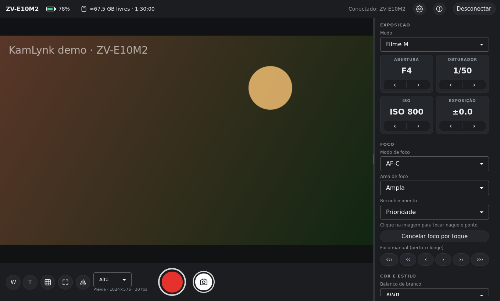

Prévia ao vivo e fluida
Prévia acelerada pela GPU, com tela cheia, grade da regra dos terços e espelhamento para você se enquadrar.
O KamLynk transforma o seu PC em monitor e controle remoto da câmera Sony: prévia ao vivo, gravar e parar, ajustar exposição e foco e transferir fotos, por Wi-Fi ou USB. Feito para a ZV-E10 II.
x86_64 · Ubuntu, Debian, Fedora, Mint, Arch, openSUSE e outras · 52 MB

Use a tela do computador como um monitor grande e mude os ajustes sem encostar na câmera. A interface se adapta ao que a sua câmera suporta.
Prévia acelerada pela GPU, com tela cheia, grade da regra dos terços e espelhamento para você se enquadrar.
Inicie e pare a gravação (R), com alerta se a câmera parar sozinha; tire fotos (Espaço) e receba-as no PC.
Modo, abertura, obturador, ISO e EV; toque na prévia para focar, foco manual, área de foco e reconhecimento de rostos e olhos.
Balanço de branco, Creative Look, Picture Profile, Cinematic Vlog, formato, qualidade, taxa de quadros, áudio e zoom.
Conecta pelo roteador, por Wi-Fi Direct ou por cabo, lembra das suas câmeras e reconecta sozinho.
Sem conta, sem telemetria e sem precisar de internet. Os logins das câmeras ficam no chaveiro do seu sistema.
Não precisa instalar: o KamLynk é um único arquivo AppImage que roda na maioria das distribuições Linux.
chmod +x KamLynk-*.AppImage (ou botão direito › Propriedades › permitir executar como programa).Feito e testado com a Sony ZV-E10 II. O KamLynk usa o Camera Remote SDK da Sony, então outros modelos suportados por ele também devem funcionar, por exemplo:
Qualquer distribuição x86_64 com glibc 2.34 ou mais nova, em X11 ou Wayland:
Sim. O KamLynk é gratuito e de código aberto, sob a licença MIT. O código está no GitHub.
Ele é feito e testado com a Sony ZV-E10 II. Como usa o Camera Remote SDK da Sony, outras câmeras Sony suportadas pelo SDK também devem funcionar; a interface mostra só os ajustes que a câmera conectada informa.
Sim. O recomendado é Wi-Fi pelo roteador; Wi-Fi Direct e USB também funcionam. Para USB, o KamLynk instala uma regra de dispositivo uma única vez, pedindo a senha de administrador.
Ainda não. O KamLynk é um controle remoto e monitor da câmera; para transmissões, uma placa de captura HDMI oferece a melhor qualidade.
Não. O KamLynk é um projeto independente, sem afiliação, apoio ou endosso da Sony. Na primeira execução ele mostra os termos exigidos pelo SDK da Sony (garantia da câmera e usos proibidos).
Baixe o KamLynk 0.7 para Linux. É gratuito.
As somas de verificação (SHA-256) e as notas da versão estão na página da versão.